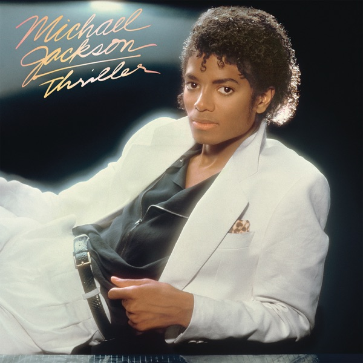

Thriller
Michael Jackson
Upgrade idea: Mobile Fidelity MFSL 1-168 (Original Master Recording, 1984) is the audiophile benchmark — half-speed mastered from the original analog masters. This MPO/Sterling pressing is a strong modern alternative at a fraction of the cost.
- Original release
- 1982
- Pressing year
- 2016
- Country
- Europe
- Format
- Vinyl LP, Album, Reissue, Stereo (Gatefold)
- Label / Cat#
- Epic – 88875-143731 / MJJ Productions – 88875-143731
- Genres
- Rock, Funk / Soul, Pop
- Styles
- Disco, Funk, Soft Rock
- Discogs release
- 8505310
- Discogs master
- 8883
- Apple Music
- Thriller
- Wikipedia
- Thriller
Production notes
Tracklist (Discogs)
| A1 | Wanna Be Startin' Somethin' | 6:02 |
| A2 | Baby Be Mine | 4:20 |
| A3 | The Girl Is Mine | 3:42 |
| A4 | Thriller | 5:57 |
| B1 | Beat It | 4:17 |
| B2 | Billie Jean | 4:57 |
| B3 | Human Nature | 4:05 |
| B4 | P.Y.T. (Pretty Young Thing) | 3:58 |
| B5 | The Lady In My Life | 4:57 |
Tracklist (Apple Music)
| 1 | Wanna Be Startin' Somethin' | 6:03 |
| 2 | Baby Be Mine | 4:20 |
| 3 | The Girl Is Mine | 3:42 |
| 4 | Thriller | 5:58 |
| 5 | Beat It | 4:18 |
| 6 | Billie Jean | 4:53 |
| 7 | Human Nature | 4:05 |
| 8 | P.Y.T. (Pretty Young Thing) | 3:58 |
| 9 | The Lady in My Life | 4:58 |
Personnel & credits
- Lane/Donald — Art Direction
- Mark Ettel — Engineer [Assistant]
- Steve Bates — Engineer [Assistant]
- Matt Forger — Engineer [Technical]
- Michael Jackson — Illustration [Inner Sleeve Drawings]
- Daniel Krieger — Lacquer Cut By
- Mac James — Lettering
- Joe Jackson (5) — Management
- Weisner-DeMann Entertainment — Management
- Bernie Grundman — Mastered By
- Dick Zimmerman (3) — Photography By
- Quincy Jones — Producer
- Humberto Gatica — Recorded By [Additional Sound Sources]
- Matt Forger — Recorded By [Additional Sound Sources]
- Bruce Swedien — Recorded By, Mixed By
- Design Pool — Stylist [Styling]
- Valadé — Stylist [Styling]
Identifiers
- Barcode: 0888751437319 (Scanned)
- Barcode: 8 88751 43731 9 (Printed)
- Label Code: LC00199
- Rights Society: BIEM/GEMA
- Rights Society: BMI (Tracks: A1, A3, B1, B2, B4)
- Rights Society: PRS (Tracks: A2, A4, B5)
- Rights Society: ASCAP (Tracks: A2, A4, B3 to B5)
- Matrix / Runout: 88875143731A (Label side A)
- Matrix / Runout: 88875143731B (Label side B)
- Matrix / Runout: 16-0055 NL A 88875143731 MPO Kr SST (Side A runout)
- Matrix / Runout: 16-0055 NL B 88875143731 MPO Kr SST (Side B runout)
Notes
Made in the EU
This release differs from the other European versions due to the fact that this version contains a barcode and the pressing information written by hand on the deadsides of the vinyl.
Notes & discrepancies
- Release year differs: your pressing=2016, Apple Music edition=1982. Apple Music typically streams the most recent remaster.
Thriller is Michael Jackson’s sixth studio album, released in November 1982 on Epic Records, and the best-selling album of all time — with over 70 million copies sold worldwide. Produced by Quincy Jones, it redefined pop music on every level: production, choreography, music video, and commercial reach. Seven of its nine tracks were released as singles, an unprecedented feat. “Billie Jean,” “Beat It,” “Wanna Be Startin’ Somethin’,” “Human Nature,” and the title track are among the most recognizable recordings in pop history. The album broke racial barriers in MTV’s early programming and cemented Jackson as the defining pop artist of the 20th century.
Sonically, Thriller is a masterpiece of studio craft — Quincy Jones and recording engineer Bruce Swedien created a dense, warm, and precisely controlled sound that holds up exceptionally well on vinyl. The low end is authoritative, the midrange is rich, and Jackson’s vocals sit perfectly in the mix.
This 2016 Europe reissue was pressed at MPO (Moulages Plastiques de l’Ouest), a French pressing plant widely regarded as one of the finest in the world for quality control and vinyl consistency. The matrix codes
16-0055 NL A 88875143731 MPO Kr SSTconfirm MPO pressing with SST (Sterling Sound) lacquer cutting — Sterling Sound is one of New York’s premier mastering facilities. A well-pressed, well-mastered contemporary reissue of one of the great pop recordings.About this 2016 Europe pressing (Vinyl, LP, Reissue): Epic / Sony catalog 88875143731, 2016 reissue pressed at MPO (France). Sterling Sound lacquer. Barcode 888751437319.